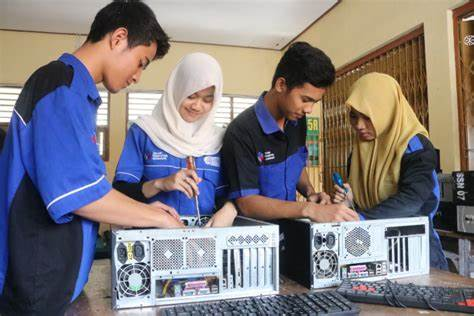

TEKNIK KOMPUTER JARINGAN
Teknik Komputer Jaringan
TKJ Adalah singkatan dari Teknik Komputer Jaringan. TKJ merupakan sebuah kejuruan yang mempelajari tentang cara merakit komputer, mengenal dan mempelajari komponen hardware apa saja yang ada di dalam komputer, merakit komputer serta fokus mempelajari jaringan dasar. Tidak hanya itu selama tiga tahun belajar di TKJ anda akan belajar sistem kerja jaringan dan pemograman web serta meng-administrasi komputer jaringan. Kejuruan TKJ hanya ada di STM/SMK, sampai saat ini jurusan TKJ merupakan jurusan yang sangat populer dan banyak diminati selain RPL dan juga jurusan Multimedia.